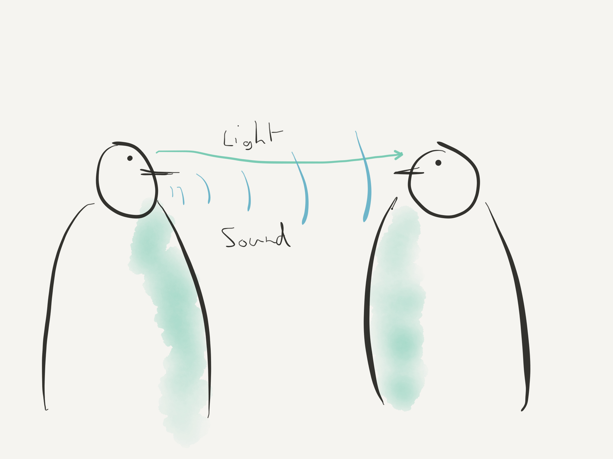
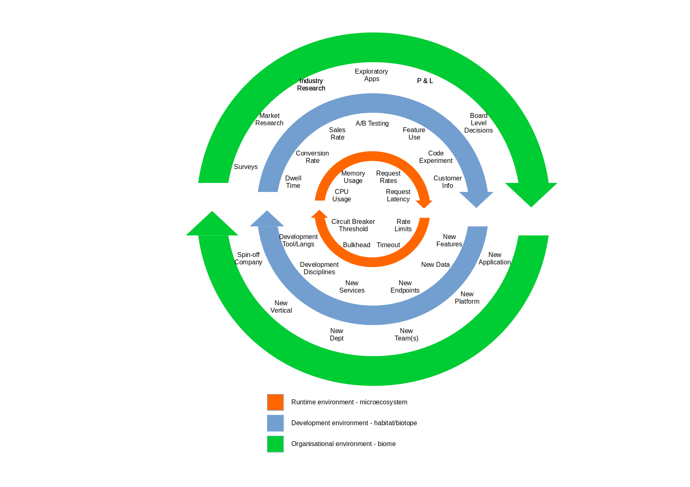

Evolutionary Architecture: What can we learn from Nature?
Chris Howe-Jones
4th April 2019
Who am I?
Name: Chris Howe-Jones [Technical Navigator]
Twitter: @agile_geek
Github: http://github.com/chrishowejones

Change is a constant
Engineering Analogies

Mapping Software to Biology

Mapping Software to Biology

Messages

Messages

S/w Environments -> Ecosystems

S/w Environments -> Ecosystems

DDD Bounded Contexts

Monoliths

Monoliths

Services

Microservices

Problems
Negative Environmental Factors -> Design Faults
Problems

Problems

Individual Organisms mechanisms
- So if each organism is a monolith, a service or a microservice that operates within the bounds of it's ecosystem.
- How do they sense and communicate with the ecosystem or other 'organisms'?
Monolithic Communication

Monolithic Communication

Service Communication
Microservices
-ve feedback mechanisms
-ve feedback mechanisms
+ve feedback mechanisms
+ve feedback mechanisms
Ecosystems
- Different levels of Ecosystem
Micro-ecosystem
Micro-ecosystem
Habitat or Biotope
Habitat or Biotope
Biome
Biome
Biosphere
Biosphere
Evolutionary Mechanism
- Adaption
- Acclimatisation
- Other mechanisms
Changes in Biome
Changes in Biome
Feedback loops

Feedback loops
Guided Evolution
Development Team are the primary evolutionary mechanism
Sensing micro-ecosystem

Sensing the Habitat/Biome

Sensing the Biome

Sensing the Biosphere
Feedback from sensors tune evolution
Factors that influence software evolution
- Not designing a sensor/response feedback mechanism
- Bad development practices making response to change harder or impossible
- Poor code hygene
- Constraints on the ecosystems that inhibit the ability to sense or respond to change.
- Typically, edicts to follow a directive/std with no understanding or explanation of the reasoning behind this.
- Over population effects poisoning the ecosystem.
Conclusion
- Identify the factors that matter and pick metrics that measure them
- Design your feedback loops (sensor/receptors) and effectors
- Identify beneficial constraints vs detrimental constraints
- (e.g. service boundaries or immutable data vs inability to change biotope due to policy/stds)
- People (the team) are your mechanism for evolution - they need to know what constraints are imposed and why and the directions of freedom as well as the results of sensory input.